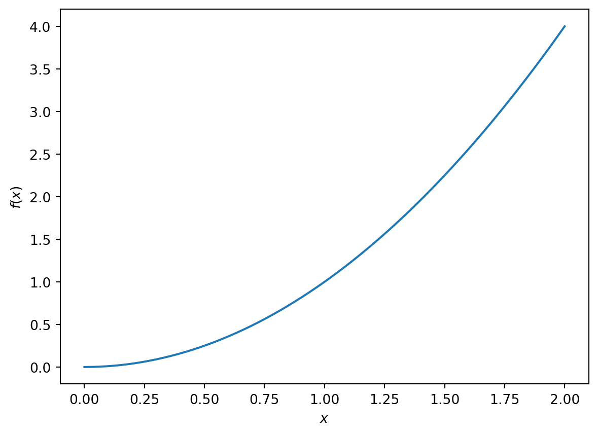

It is strongly encouraged that you use and develop programs over the course of your project. You should discuss programming with your project supervisor. In this section we will develop Python codes to solve a number of example problems.
The focus of the examples: - developing programming skills for problem solving - writing your own programmes - using existing packages
It is usually a very useful exercise to try to implement your own version of an algorithm. However, in many cases there already exist well developed codes that we of course should use!
You can use Python via Apps Anywhere (Open Anaconda and then use the SPyder IDE).
Alternatively, you can run Python codes via your Quarto document. On the Uni machines Quarto has been connected to an installation of Python.
7.1 Some key ideas
7.1.1 Variables and datatypes
Code
# Define an integera=8# Define a floating point numberb=16.25#s='Arsenal FC'print(type(a))print(type(b))print(type(s))boolean_variable_1=Trueboolean_variable_2=Falseboolean_variable_and=boolean_variable_1*boolean_variable_2assert(boolean_variable_and==False)## addition## substraction# multiplication## exponential
<class 'int'>
<class 'float'>
<class 'str'>
7.1.2 Lists and dictionaries
Code
my_list=[1,2,3,4,5]print(my_list)print('The second entry in the list is')print(my_list[1])
[1, 2, 3, 4, 5]
The second entry in the list is
2
7.1.3 Logical statements and control loops
7.1.4 Writing functions
A good rule of thumb is that if you find yourself using the same piece of code three or more times you should write a function. This avoids duplication of code.
Suppose we find ourselves manually computing the sum of positive integers many times, i.e. \[
s_2=0+1+2=3
\] and \[
s_3=0+1+2+3=6.
\]
It makes sense to write a function that computes the sum for arbitrary \(n\). Then we call that function when needed.
Code
# Define a functiondef sum_integers(n): sum_int=0for i inrange(n): sum_int=sum_int+ireturn sum_int# The old way might eb to manually write out the sums_1=0+1s_2=0+1+2s_3=0+1+2+3# instead we call a function s_function_3=sum_integers(3)print(s_function_3)s_function_120=sum_integers(120)print(s_function_120)
3
7140
7.2 Code debugging
syntax errors
algorithm errors
sum=0.0for i inrange(5)sum=sum+i
for i inrange(5)sum=sum+i
7.2.1 interpreting error messages
7.2.2 print to screen
7.2.3 check datatypes
7.2.4 check syntax of function call
7.2.5 Debugger
7.3 Essential Python libraries
7.3.1 Matrix computation (numpy)
Numpy is a widely used Python libary. It is a standard way to use arrays in Python. Numpy also contains lots of algorithm (e.g. linear algebra, calculus, mathematical functions, integration, random number generation etc.). You can find a beginner’s guide here.
7.3.1.1 Arrays
Numpy provides tools for calculating many mathematical operations.
Code
import numpy as npx=3.14y=np.sin(x)print('sin (3.14) is: ' )print(y)assert(np.abs(y)<0.1)z=np.pip=np.sin(z)assert(np.abs(p)<0.00001)print(p)
sin (3.14) is:
0.0015926529164868282
1.2246467991473532e-16
We can also use numpy to define and manipulate arrays. In the example below we use python lists to define two 1D arrays.
Code
import numpy as np# Define a numpy arraya = np.array([1, 2, 3, 4, 5, 6])b=np.array([7,8,9,10,11,12])print(a)c=a+bprint('The sum of a and b is:')print(c)print("The first entry in a is")a[0]
[1 2 3 4 5 6]
The sum of a and b is:
[ 8 10 12 14 16 18]
The first entry in a is
1
We can also use numpy for higher dimensional arrays
Calculate the determinant of the 2x2 matrix \[
A=\begin{pmatrix}
4 & 3 \\
2 & 1
\end{pmatrix}.
\]
Code
import numpy as np# generate a two by two matrix of zerosA=np.zeros((2,2))# Set values as per questionsA[0,0]=4A[0,1]=3A[1,0]=2A[1,1]=1# Print A out to check it is correctprint('The matrix is:')print(A)# Compute the determinantdeterminant=np.linalg.det(A)print('The determinant is:')print(determinant)# Formally check that the answer is correct.assert(determinant==-2.0)
The matrix is:
[[4. 3.]
[2. 1.]]
The determinant is:
-2.0
Compute the trace of the matrix \(A\).
Compute the determinant of the \(3 \times 3\) matrix \[
B=\begin{pmatrix}
4 & 3& 2 \\
2 & 1 & 4 \\
3 & 2 & 1
\end{pmatrix}.
\]
Suppose we wish to plot the function \[
f(x)=x^2, \ \ x \in[0,2].
\]
Code
#import python librariesimport matplotlib.pyplot as pltimport numpy as np# define xx=np.linspace(0,2,200)# Now define the funciton of xf=x**2# Now plot the function# Generate a figure ane an axisfig,ax=plt.subplots()# call the plot function to plot the dataax.plot(x,f)# Set the x and y labelsax.set_xlabel('$x$')ax.set_ylabel('$f(x)$')
Text(0, 0.5, '$f(x)$')

Exercises:
Change the domain to \[x\in[0,4]\].
Plot the function \[f(x)=\sin(x) \].
Create two subplots.
Make the font on the labels larger
Add a legend to the figures.
7.3.3 Symbolic computation in Python (sympy)
7.4 Python libraries of interest to particular projects
At some point (either over the course of your project or later) you will likely encounter a problem that cannot be solved using existing code libraries, i.e. you will need to write your own progammes. To prepare for this day, it is a good idea to practice your code development skills on problems where the solution are already known. Over the course of project assessment you will be asked about the methods that you have used in your project. It is much easier to defend the use of a method if you have a clear idea how to programme it; then the limitations of a method become much clearer. You can also include this code in appendix in your written report.